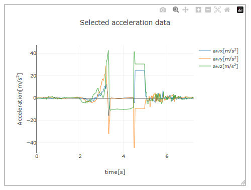
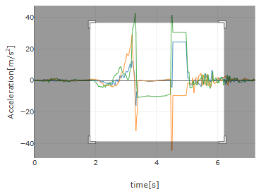
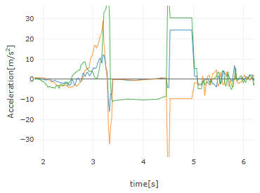
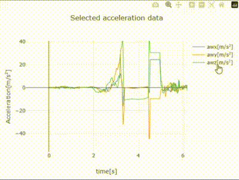
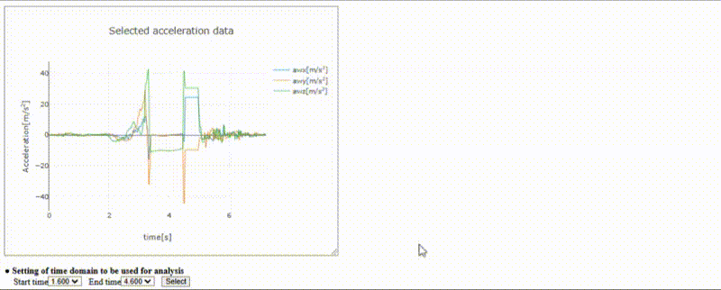

[ Operation Guide ]
■ Graph Adjustment and Output
The graphs in this app are drawn using the free graphing JavaScript library Plotly.js (ver.2.35.2). If you open this app on a PC, moving the mouse cursor over a displayed graph will reveal menu bar buttons in the upper right corner of the graph, as shown below (on a smartphone, the menu bar is always visible).

Menu bar buttons
Menu bar buttons
| 【Button Functions】 | |
|---|---|
| 【Camera Button】 Save the graph as a PNG image. Clicking the camera button will save the graph as a file named "newplot.png" in the browser's default download folder. | |
|
【Zoom Mode Button】 Switch to zoom mode (there are two modes: zoom mode and pan mode, with zoom mode being the default). In zoom mode, selecting a specific area of the graph, as shown below, will enlarge that area and display it across the entire graph area.
Select the range to zoom

The selected range is zoomed in
 |
|
|
【Pan Mode Button】 Switch to pan mode (there are two modes: zoom mode and pan mode, with zoom mode being the default). In pan mode, as shown below, you can click and drag the mouse on the graph to move the visible area. 
|
|
| 【Zoom In Button】 Each click zooms in toward the center of the displayed graph. | |
| 【Zoom Out Button】 Each click zooms out from the center of the displayed graph. | |
| 【Autoscale Button】 Adjust the layout to display all data. | |
| 【Reset Button】 Return to the initial layout. For graphs displayed in this app, the autoscale and reset buttons perform the same function. | |
● Changing the Graph Area Size
As shown below, you can resize the graph area by clicking and dragging the bottom right corner of the graph's frame. When resizing, the width and height of the area are displayed in small red text in the bottom right corner.
